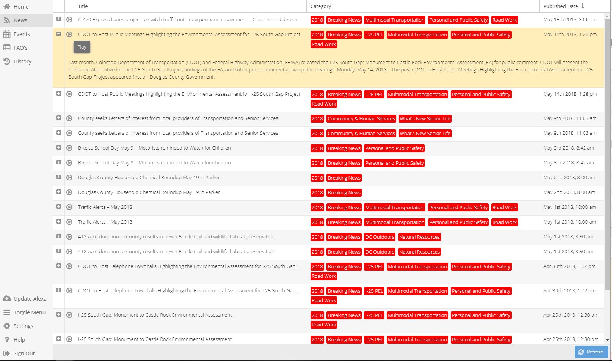

News¶

News stories will populate on their own from RSS feed entered in Settings.
If the page is found blank, or the news content does not appear to be up to date, this is an indication syncing is not occurring. Verify RSS source.
Enter News Feed under Settings -> News Feed. Click sync data button in grid row of feed to be synced. Once syncing has finished, return to News page. If successful news should be updated and latest data will be noticeable.
Functions Within News Page¶
- “+” Button
- Expands view of each news story
- Play Button
- Allows a sample of story to be heard
See News Guides here: News Guides